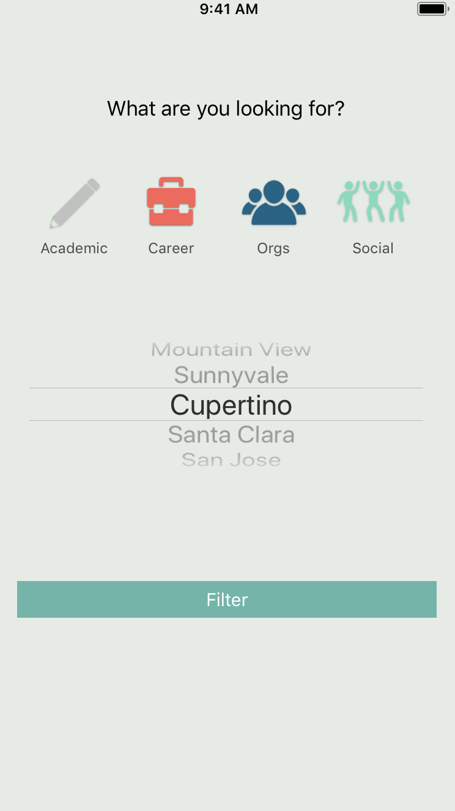
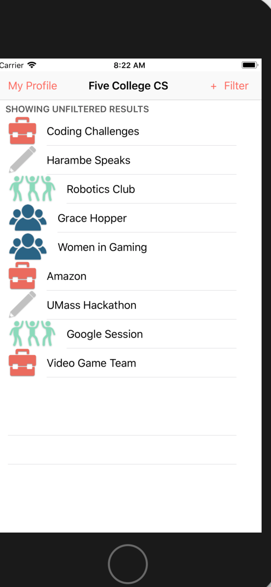
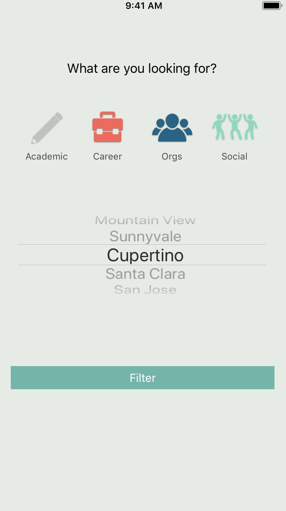
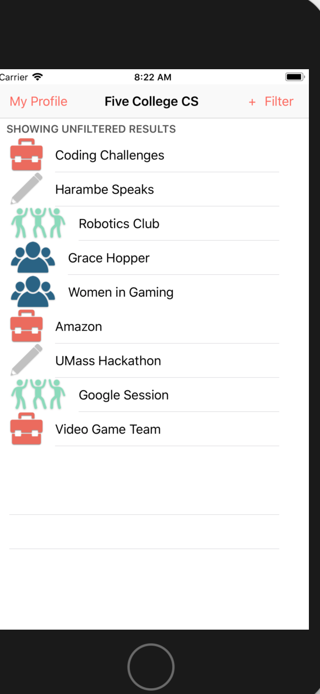

5 College CS
 



"Five-College CS" is a student developed app that helps Western Massachusetts Five College computer science students, faculty, and organization/clubs stay connected. The Five College Consortium includes Smith College, Hampshire College, Mount Holyoke College, Amherst College, and UMASS Amherst. The app is a platform that encourages connection, collaboration, and communication through a single all-inclusive resource app where you can find, post, and filter through academic, social, and career events and information that will broaden your education, experiences, and opportunities in the five-college consortium.
Contribution:
* Designed the wireframe using Sketch
* Implemented art assests
* Programmed the app's page segways and User Interface
* Carried out research surrounding the 5 College Consortium's Computer Science Departments communication between the department and it's students
* Assisted with the development of the business plan
* Attended weekly project meetings